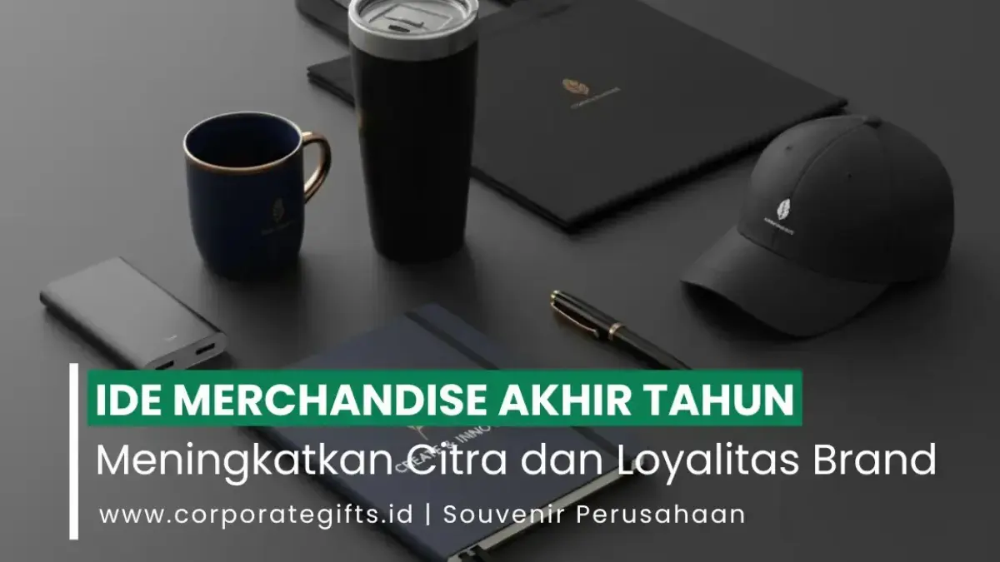

Corporate Gifts ID - Menjelang pergantian tahun kalender, banyak organisasi bisnis mulai mempersiapkan cenderamata eksklusif untuk dibagikan kepada karyawan, relasi korporat, serta pelanggan setia. Merchandise akhir tahun adalah hadiah bermerek yang disiapkan perusahaan sebagai wujud apresiasi tulus atas kontribusi dan kemitraan sepanjang dua belas bulan terakhir. Ide yang terbukti paling berkesan meliputi tumbler stainless steel, agenda kerja, hampers akhir tahun, dan aksesori teknologi karena fungsional, tahan lama, dan menjaga kehadiran brand secara berkelanjutan di meja kerja penerima.
Tradisi berbagi cenderamata akhir tahun bukan sekadar agenda seremonial rutin, melainkan strategi relasional mendalam untuk merawat loyalitas brand (brand retention). Melalui pilihan produk yang tepat, sebuah perusahaan dapat memancarkan nilai integritas, perhatian tulus, serta standar profesionalisme yang tinggi.
Poin Kunci Merchandise Akhir Tahun Perusahaan:
- Investasi Retensi Relasi: Memberikan apresiasi fisik mempererat ikatan emosional dan menjaga kemitraan tetap langgeng menyongsong tahun anggaran baru.
- Prioritaskan Nilai Pakai Nyata: Barang seperti tumbler, kalender meja, power bank, dan buku agenda harian menjaga visibilitas logo setiap hari.
- Segmentasi Paket Berjenjang: Bedakan antara paket fungsional massal untuk seluruh tim dengan paket hampers mewah untuk jajaran direksi mitra.
- Pemesanan Terencana: Lakukan kurasi produk dan persetujuan sampel (mockup) sejak Oktober agar terhindar dari lonjakan antrean produksi akhir tahun.
Pentingnya Merchandise Akhir Tahun bagi Reputasi Bisnis
Dalam persaingan bisnis yang ketat, menjaga loyalitas klien yang sudah ada membutuhkan biaya yang jauh lebih efisien dibandingkan mencari pelanggan baru. Merchandise akhir tahun menjadi simbol perhatian nyata bahwa kemitraan yang terjalin dinilai sangat berharga oleh jajaran manajemen.
Ketika penerima memanfaatkan produk yang Anda berikan dalam keseharian mereka, nama perusahaan Anda terpatri sebagai mitra yang dapat diandalkan. Ini adalah media promosi pasif yang bekerja secara konsisten tanpa terkesan agresif atau mengganggu.
Ringkasan Daftar Produk Merchandise Akhir Tahun Terpopuler
Berikut sepuluh opsi produk cenderamata penutup tahun yang konsisten menduduki peringkat teratas pilihan korporasi terkemuka:
- Tumbler atau Mug Stainless: Bermanfaat setiap hari dan mendukung komitmen ramah lingkungan bebas sampah plastik sekali pakai.
- Kalender Meja dan Agenda Kulit: Menyajikan kehadiran logo perusahaan selama 365 hari penuh di meja kerja pimpinan.
- Tote Bag Kanvas Premium: Kuat, modis, ramah lingkungan, dan fleksibel dibawa ke berbagai acara luar kantor.
- Pouch Multifungsi: Tempat penyimpanan ringkas yang rapi untuk perlengkapan kerja dan kabel gawai.
- Payung Lipat Otomatis Custom: Memiliki bidang cetak luas yang fungsional melindungi di musim penghujan penutup tahun.
- Hampers Korporat Eksklusif: Pilihan standar emas bagi klien prioritas dan rekanan strategis dewan komisaris.
- Aksesori Teknologi Terkini: Power bank fast charging, pengisi daya nirkabel (wireless charger), dan pelantang audio bluetooth ringkas.
- Paket Relaksasi dan Kebugaran: Set minyak aromaterapi (essential oil), bantal leher travel, dan diffuser aromatik.
- Jaket Reversible Dua Sisi: Pakaian tim trendi berkarakter modern yang dapat disesuaikan dengan kebutuhan suasana.
- Voucher Hadiah Digital: Solusi apresiasi instan yang sangat praktis bagi organisasi dengan tim kerja jarak jauh (remote team).
Merchandise Fungsional yang Selalu Diminati dan Dipakai
Kategori fungsional selalu menjadi pilihan aman dengan tingkat penerimaan tertinggi karena menyatu dengan rutinitas harian profesional:
1. Tumbler Stainless Steel atau Mug Keramik
Tumbler berinsulasi ganda berbahan baja nirkarat (stainless steel SUS304) kini telah menjadi simbol gaya hidup modern yang menjaga suhu minuman panas atau dingin selama lebih dari 8 jam. Anda dapat mempelajari perbandingannya dalam ulasan souvenir tumbler vs botol minum biasa atau merencanakan alokasi biaya melalui panduan anggaran souvenir tumbler custom untuk pemesanan jumlah besar.
2. Kalender Meja dan Buku Agenda Eksklusif
Buku agenda bersampul kulit sintetis dengan teknik blind deboss dan kalender meja berdesain bersih (clean layout) adalah duet cenderamata klasik yang terbukti efektif sebagai agenda dan kalender media branding perusahaan. Setiap halaman dapat memuat logo korporat, slogan, serta hari peringatan penting, terutama jika disatukan ke dalam paket gift set notebook eksklusif.
3. Tas Jinjing (Tote Bag) Kanvas Tebal
Tote bag berbahan kanvas tebal 12 oz menawarkan daya tahan fisik yang sangat prima untuk aktivitas belanja santai maupun menghadiri konferensi. Anda dapat melihat inspirasi desainnya pada ulasan souvenir totebag acara perusahaan desain elegan agar tampil modis dan berkelas.
4. Pouch Organizer Multifungsi
Dompet kecil berbahan kulit sintetis atau kanvas nilon tahan air sangat digemari karena fungsional merapikan kabel gawai, perlengkapan higienis, dan alat tulis kantor. Model cenderamata kompak ini selaras dengan tren souvenir kantor kekinian yang memprioritaskan portabilitas.
5. Payung Lipat Otomatis
Menjelang akhir tahun yang identik dengan musim hujan di Indonesia, payung lipat kokoh dengan rangka anti-angin (windproof frame) seperti payung lipat anti-UV custom adalah hadiah protektif yang sangat bermanfaat. Bidang kanopinya yang luas menampilkan logo perusahaan secara proporsional.

Presentasi kemasan hardbox mewah dengan sekat busa kustom melipatgandakan prestise hadiah akhir tahun bagi relasi bisnis.
Pilihan Merchandise Premium untuk Klien VVIP dan Mitra Strategis
Ketika target audiens adalah pimpinan puncak korporasi atau rekanan bisnis kunci, paket hadiah bernilai estetika tinggi menjadi medium penghormatan yang sangat pantas:
- Hampers Akhir Tahun Gourmet & Artisan: Mengombinasikan kopi biji sangrai lokal pilihan, cokelat artisan premium, dan lilin aromaterapi dalam keranjang modern. Anda dapat melihat ragam inspirasinya di ulasan rekomendasi isi hampers akhir tahun serta lini produk katalog hampers dan parcel kami.
- Aksesori Teknologi Nirkabel: Power bank tipis berkapasitas 10.000 mAh fast charging dengan fitur pengisian nirkabel (fast wireless charging), sebagaimana dibahas dalam panduan power bank dan flashdisk souvenir klien VIP, memberikan mobilitas prima bagi eksekutif.
- Paket Kebugaran & Relaksasi (Wellness Kit): Diffuser aroma ultrasonik portabel dan minyak aromaterapi murni yang memberikan ketenangan pikiran setelah setahun penuh mencurahkan energi kerja.
Inspirasi Merchandise Kreatif dan Unik agar Brand Tampil Beda
Bagi industri kreatif atau jenama yang ingin memancarkan aura inovasi, opsi berikut mampu mencuri perhatian:
- Jaket Reversible Dua Warna: Outerwear yang dapat dibalik dengan dua nuansa warna berbeda, memadukan kenyamanan saat bekerja di kantor dan gaya kasual saat berakhir pekan.
- Tanaman Sukulen Meja Mini: Pot keramik custom berlogo perusahaan yang ditanami kaktus sukulen hidup, menyimbolkan harapan akan pertumbuhan bisnis yang terus bertumbuh subur.
- Kartu Hadiah Digital Berdesain Khusus: Memberikan kebebasan bagi karyawan lintas pulau untuk menukarkan saldo apresiasi pada platform e-commerce pilihan mereka.
Tabel Matriks Komparasi Opsi Merchandise Akhir Tahun
Tabel berikut memetakan rentang pilihan produk berdasarkan fokus manfaat, target penerima, dan teknik penempatan logo:
| Jenis Merchandise | Kategori Manfaat | Target Audiens Ideal | Teknik Cetak Rekomendasi |
|---|---|---|---|
| Tumbler Stainless SUS304 | Fungsional harian ramah lingkungan | Seluruh karyawan & mitra umum | Laser marking / grafir doff presisi |
| Agenda Kulit & Pen Metal | Produktivitas kerja profesional | Level manajerial & PIC proyek | Blind deboss kulit / grafir laser pena |
| Power Bank Fast Charging | Dukungan mobilitas gadget | Tim lapangan & mitra komersial | Print UV flatbed bertekstur timbul |
| Hampers Artisan Kotak Kaku | Relaksasi mewah & prestise | Direksi, komisaris, klien VVIP | Hot stamping emas pada tutup hardbox |
| Payung Lipat Otomatis | Proteksi cuaca bidang promosi luas | Distributor rekanan & pelanggan | Sablon pasta tahan cuaca ekstrem |
Tren Desain dan Karakter Visual Merchandise Mendatang
Karakter visual cenderamata akhir tahun terus bertransformasi ke arah estetika yang semakin matang. Anda dapat menyimak ulasan mendalamnya di artikel tren merchandise akhir tahun perusahaan, dengan tiga pilar utama:
- Minimalisme Material Otentik: Desain bersih yang menonjolkan tekstur asli kayu, kanvas mentah, atau logam tanpa dekorasi cat berlebihan. Warna monokrom netral seperti hitam pekat, abu-abu arang, dan krem pasir menjadi primadona.
- Aksen Metalik Elegan: Detail logo berlapis chrome perak atau rose gold halus pada bagian ujung produk memberikan sentuhan mewah tanpa terkesan norak.
- Personalisasi Nama Individual: Kemampuan mencetak nama masing-masing penerima secara unik di setiap unit produk memberikan impresi bahwa hadiah tersebut dibuat khusus untuk mereka.
Tips Memilih Merchandise Akhir Tahun yang Tepat Sasaran
Ikuti tiga panduan praktis berikut demi menjamin keberhasilan program cenderamata penutup tahun perusahaan Anda:
- Petakan Karakteristik Target Penerima: Kebutuhan hadiah untuk staf internal tentu berbeda dengan kebutuhan diplomasi bisnis untuk dewan komisaris klien. Segmentasikan paket sesuai tingkat relasi.
- Tentukan Skala Alokasi Anggaran: Alokasikan anggaran secara rasional per paket hadiah, dengan memperhitungkan biaya kemasan kaku dan ongkos kirim ke alamat masing-masing relasi.
- Utamakan Mutu di Atas Kuantitas: Memberikan satu barang berkualitas prima yang tahan bertahun-tahun jauh lebih bernilai bagi citra brand dibandingkan memberikan paket berisi banyak barang rapuh yang cepat rusak.
FAQ Seputar Merchandise Akhir Tahun Perusahaan
Kesimpulan dan Solusi Pemesanan Bersama Corporate Gifts ID
Mengalokasikan pengadaan merchandise akhir tahun bukan sekadar membagikan cinderamata seremonial, tetapi menanamkan investasi emosional yang bernilai tinggi bagi keberlanjutan bisnis. Cenderamata yang dirancang dengan mutu bahan terbaik, kemasan rapi, dan sentuhan personalisasi elegan akan selalu membekas di hati klien maupun karyawan Anda.
Rencanakan cenderamata penutup tahun Anda bersama CorporateGifts.ID. Jelajahi aneka koleksi merchandise perusahaan dan souvenir kantor kami, unduh dokumen e-katalog produk resmi, atau langsung konsultasikan anggaran dan ajukan penawaran harga melalui formulir minta penawaran resmi (RFQ). Tim spesialis kami siap mewujudkan cenderamata berkualitas prima dengan mockup gratis berlogo brand Anda.

Ditulis oleh: Arinda Zakia
Senior Corporate Gifting SpecialistSpesialis pengadaan hadiah korporat dan strategi retensi klien B2B di CorporateGifts.ID. Berpengalaman lebih dari 7 tahun dalam menyusun paket merchandise akhir tahun, kurasi gift set VIP, dan manajemen pengadaan cenderamata instansi pemerintah serta swasta nasional.
Lihat Profil Lengkap & Panduan Lainnya